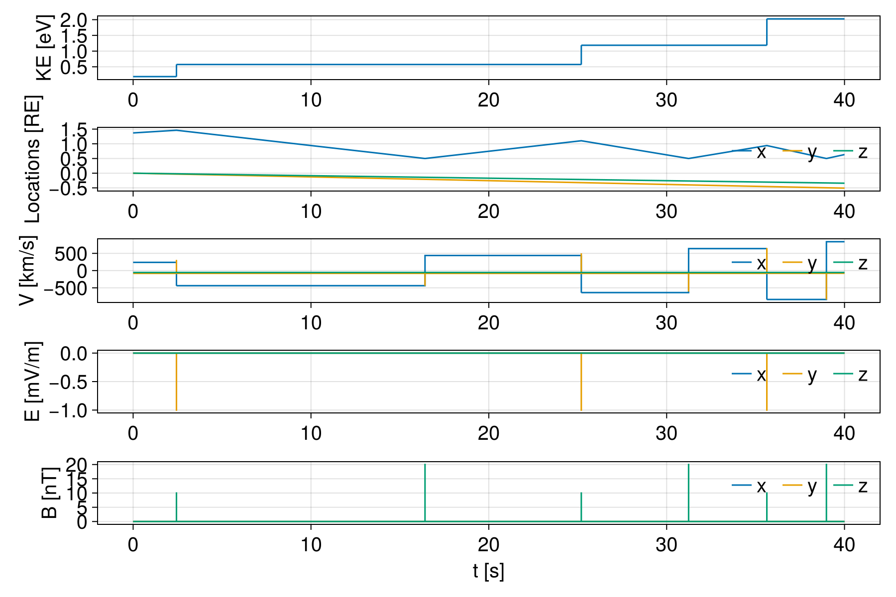
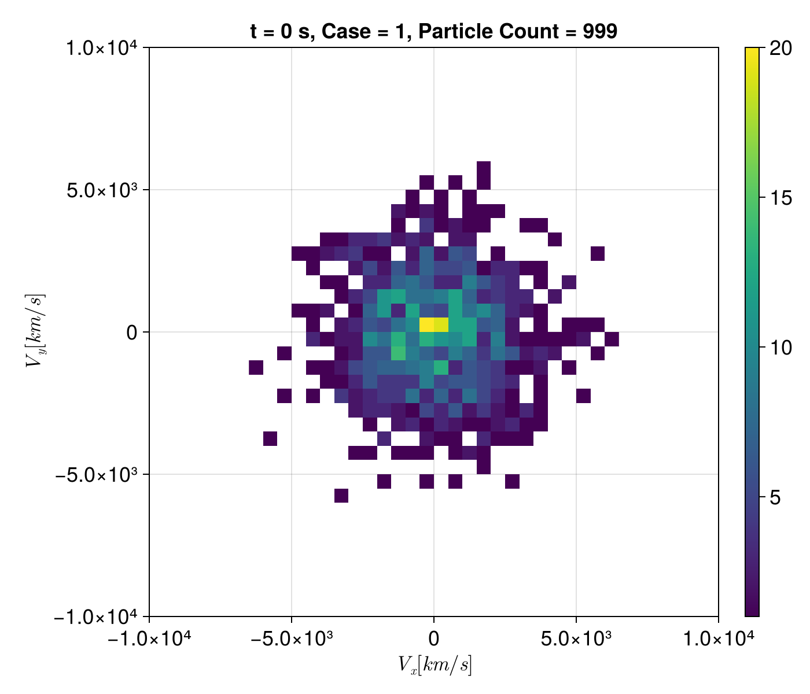
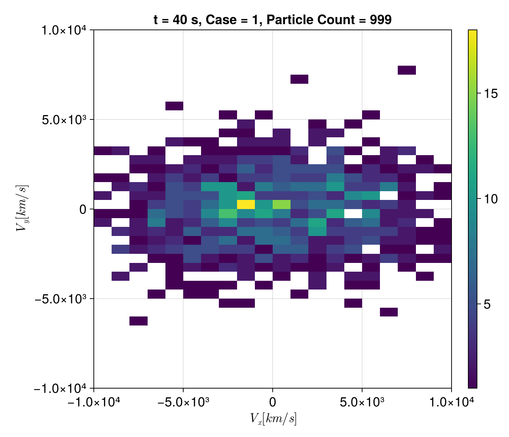
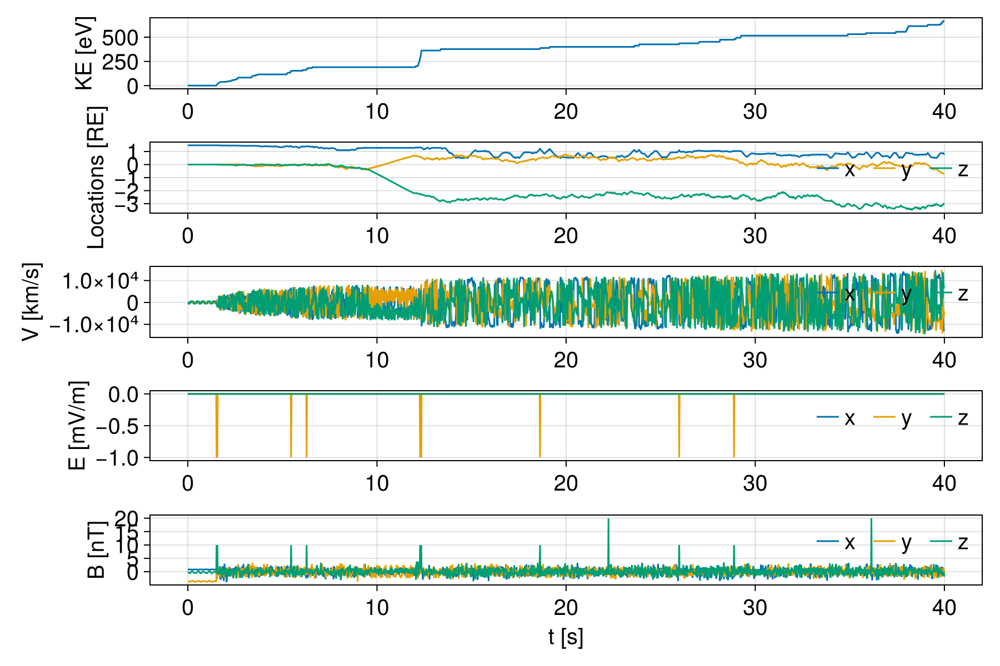
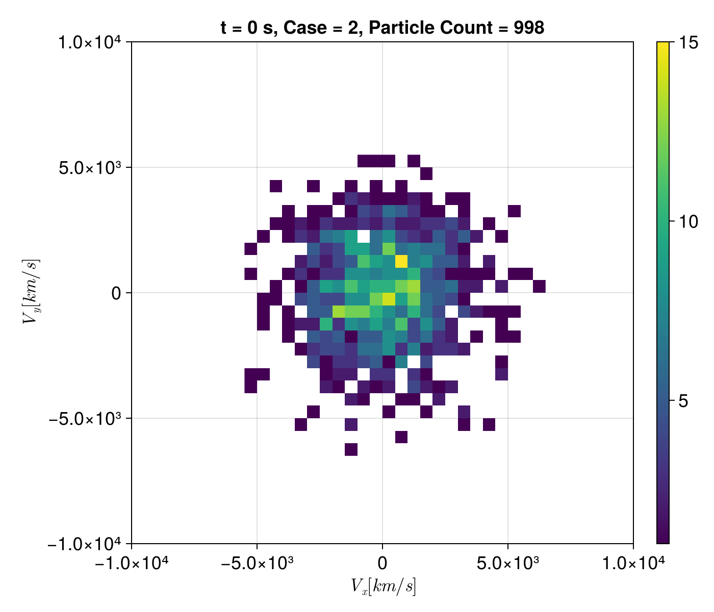
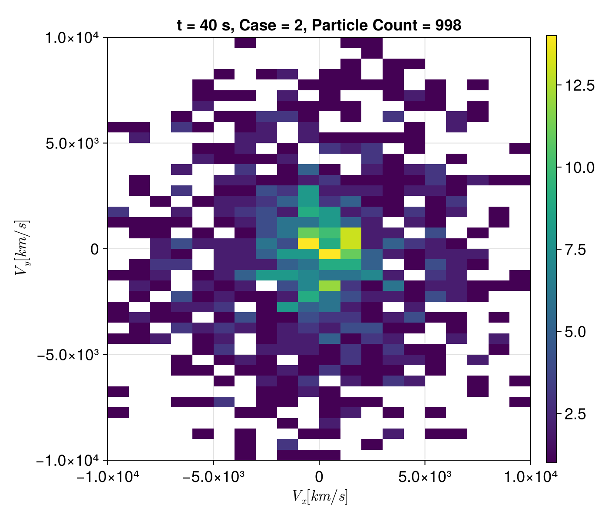

Electron Fermi Acceleration Inside Foreshock Transient Cores


This example demonstrates electron acceleration via Fermi acceleration using a simple 1D model. It follows the setup described in Fermi acceleration of electrons inside foreshock transient cores. The simulation domain is $2\,R_E$ in x, where the initial magnetosheath locates at $x \in [0, 0.5] R_E$ with a magnetic field $B_z = 20\,\mathrm{nT}$ and the bow shock at $x = 0.5\,R_E$. The foreshock transient boundary is at $x = 1.5\,R_E$ initially and moves toward the bow shock at a speed $U=100\,\mathrm{km/s}$. The region beyond $x=1.5\,R_E$ is the foreshock transient sheath in which the magnetic field is $B_z=10\,\mathrm{nT}$. A convection electric field $E_y = -1\,\mathrm{mV/m}$, consistent with the velocity U, is introduced in the foreshock transient sheath. Between the two boundaries, $0.5\,R_E < x < 1.5\,R_E$, is the foreshock transient's core region.
In the first case, the magnetic field in the core region is set to zero. In the second case, a magnetic fluctuation is imposed:
\[\begin{aligned} \delta B_{x,y,z} = \sum_{N = N_0}^{N_1} \delta B_N \cos\left( \frac{2\pi N x}{L_0} + \phi_{x,y,z}^N \right) \\ \delta B_N = \tilde{B} (N/N_0)^{-1.2},\quad N = N_0, N_0 + 1, ..., N_1 \end{aligned}\]
Here $L_0 = 1\,R_E$ is the initial length of the core in the x direction. We choose $N_0 = 100, N_1 = 1000, \tilde{B}=0.2\,\mathrm{nT}$, and $\phi_{x,y,z}^N$ as the random phases of various modes between 0 and 2π (independently different in the x, y, and z directions). As the low-frequency wave speed ($\sim \mathcal{O}(10)\mathrm{km/s}$) is much smaller than the electron speed ($\sim \mathcal{O}(10^3)\mathrm{km/s}$), we do not include wave propagation in this 1D model.
One important note about Fermi acceleration for space plasmas is that space plasmas are collisionless. Electric field is the only way to accelerate charged particles, instead of elastic collisions.
using TestParticle, OrdinaryDiffEqVerner, StaticArrays
import TestParticle as TP
using TestParticle: mₑ, Rₑ, qₑ
using TestParticle: get_EField, get_BField
using Random
using FHist
using CairoMakie, Printf
# For reproducible results
Random.seed!(1234)
# Analytic EM fields
function Bcase1(xu, t)
Bz = if xu[1] < 0.5Rₑ
20e-9
elseif xu[1] > 1.5Rₑ + U*t
10e-9
else
0.0
end
SA[0.0, 0.0, Bz]
end
function E(xu, t)
Ey = if xu[1] > 1.5Rₑ + U*t
-1e-3
else
0.0
end
SA[0.0, Ey, 0.0]
end
Bcase2(xu, t) =
if xu[1] < 0.5Rₑ
SA[0.0, 0.0, 20e-9]
elseif xu[1] > 1.5Rₑ + U*t
SA[0.0, 0.0, 10e-9]
else
δBfunc(xu)
end
function get_B_perturb(x)
L₀, N₀, N₁, B̃ = 1Rₑ, 100, 1000, 0.2e-9
B = fill(0.0, 3, length(x)) # [T]
# Eqs (4-5) from the paper
for N in N₀:N₁
δBn = B̃ * (N / N₀)^-1.2
ϕx, ϕy, ϕz = rand(SVector{3, Float64}) .* 2
for i in axes(B, 2)
δBx = δBn * cospi(2 * N * x[i] / L₀ + ϕx)
δBy = δBn * cospi(2 * N * x[i] / L₀ + ϕy)
δBz = δBn * cospi(2 * N * x[i] / L₀ + ϕz)
B[1, i] += δBx
B[2, i] += δBy
B[3, i] += δBz
end
end
B
end
isoutofdomain(xv, p, t) =
if xv[1] < 0 || xv[1] > 2Rₑ
return true
else
return false
end
function prob_func(prob, i, repeat)
x0 = SA[(0.5 + rand()) * Rₑ, 0.0, 0.0] # launched in the core region
u0 = SA[0.0, 0.0, 0.0]
T₀ = 10 # [eV]
vth = √(2T₀*abs(qₑ)/mₑ) # [m/s]
vdf = Maxwellian(u0, vth)
v0 = TP.sample(vdf)
prob = remake(prob, u0 = [x0..., v0...])
end
"""
Kinetic energy.
"""
get_kinetic_energy(dx, dy, dz) = 1 // 2 * (dx^2 + dy^2 + dz^2)
function plot_multiple(sol)
energy = map(x -> get_kinetic_energy(x[4:6]...), sol.u) .* mₑ ./ abs(qₑ)
# Obtain the EM fields along the particle trajectory
# [mV/m]
Efield = get_EField(sol)
Bfield = get_BField(sol)
E = [Efield(sol[:, istep], sol.t[istep]) .* 1e3 for istep in eachindex(sol)]
# [nT]
B = [Bfield(sol[:, istep], sol.t[istep]) .* 1e9 for istep in eachindex(sol)]
Ex = [e[1] for e in E]
Ey = [e[2] for e in E]
Ez = [e[3] for e in E]
Bx = [b[1] for b in B]
By = [b[2] for b in B]
Bz = [b[3] for b in B]
t = sol.t
x = @views sol[1, :] ./ Rₑ
y = @views sol[2, :] ./ Rₑ
z = @views sol[3, :] ./ Rₑ
vx = @views sol[4, :] ./ 1e3
vy = @views sol[5, :] ./ 1e3
vz = @views sol[6, :] ./ 1e3
fig = Figure(size = (900, 600), fontsize = 20)
xlabels = ("", "", "", "", "t [s]")
ylabels = ("KE [eV]", "Locations [RE]", "V [km/s]", "E [mV/m]", "B [nT]")
limits = (
(nothing, (nothing, nothing)),
(nothing, (nothing, nothing)),
(nothing, (nothing, nothing)),
(nothing, (nothing, nothing)),
(nothing, (nothing, nothing)))
axs = [Axis(fig[row, col], xlabel = xlabels[row],
ylabel = ylabels[row], limits = limits[row])
for row in eachindex(xlabels), col in 1:1]
linkxaxes!(axs...)
lines!(axs[1], t, energy)
lines!(axs[2], t, x, label = "x")
lines!(axs[2], t, y, label = "y")
lines!(axs[2], t, z, label = "z")
lines!(axs[3], t, vx, label = "x")
lines!(axs[3], t, vy, label = "y")
lines!(axs[3], t, vz, label = "z")
lines!(axs[4], t, Ex, label = "x")
lines!(axs[4], t, Ey, label = "y")
lines!(axs[4], t, Ez, label = "z")
lines!(axs[5], t, Bx, label = "x")
lines!(axs[5], t, By, label = "y")
lines!(axs[5], t, Bz, label = "z")
for ax in @view axs[2:5]
axislegend(ax, framevisible = false, orientation = :horizontal)
end
fig
end
function plot_dist(sols; t = 0, case = 1, slice = :xy)
##TODO: Optimization
vx = Vector{eltype(sols[1].u[1])}(undef, 0)
vy = similar(vx)
vz = similar(vx)
for sol in sols
if (sol.t[end] ≥ t) && (1.5Rₑ - U*sol.t[end] > sol[1, end] > 0.5Rₑ)
v = sol(t)[4:6] ./ 1e3
append!(vx, v[1])
append!(vy, v[2])
append!(vz, v[3])
end
end
f = Figure(size = (700, 600), fontsize = 18)
if slice == :xy
vars = (vx, vy)
xlabel = L"V_x [km/s]"
ylabel = L"V_y [km/s]"
elseif slice == :xz
vars = (vx, vz)
xlabel = L"V_x [km/s]"
ylabel = L"V_z [km/s]"
elseif slice == :yz
vars = (vy, vz)
xlabel = L"V_y [km/s]"
ylabel = L"V_z [km/s]"
end
h2d = Hist2D(vars; nbins = (50, 50))
_,
_heatmap = plot(f[1, 1], h2d;
axis = (title = "t = $t s, Case = $case, Particle Count = $(length(vx))",
xlabel = xlabel, ylabel = ylabel, aspect = 1, limits = (-1e4, 1e4, -1e4, 1e4)))
Colorbar(f[1, 2], _heatmap)
f
end
function find_max_acceleration_index(sols; countall = true, tend = 40)
if countall
ratio = [get_kinetic_energy(sol[4:6, end]...) / get_kinetic_energy(sol[4:6, 1]...)
for sol in sols]
else
# only count the particles that are still trapped at t=tend
ratio = [get_kinetic_energy(sol[4:6, end]...) / get_kinetic_energy(sol[4:6, 1]...)
for sol in sols if sol.t[end] > tend-0.1]
end
imax = argmax(ratio)
energy_init = get_kinetic_energy(sols[imax][4:6, 1]...) .* mₑ ./ abs(qₑ)
energy_final = get_kinetic_energy(sols[imax][4:6, end]...) .* mₑ ./ abs(qₑ)
@printf "Initial energy [eV]: %.2f " energy_init
@printf "Final energy [eV]: %.2f " energy_final
@printf "Kinetic energy change ratio: %.2f\n" ratio[imax]
imax
end
const U = -100e3 # [m/s]
# Initial condition to be overwritten in prob_func
stateinit = zeros(6)
# Time span [s]
tspan = (0, 40)
# Number of particles
trajectories = 1000;Case 1: 0 core field
param = prepare(E, Bcase1; species = Electron);
prob = ODEProblem(trace!, stateinit, tspan, param)
ensemble_prob = EnsembleProblem(prob; prob_func, safetycopy = false)
sols = solve(ensemble_prob, Vern9(), EnsembleThreads();
isoutofdomain, trajectories, verbose = true);
# maximum acceleration ratio particle index
imax = find_max_acceleration_index(sols)
f = plot_multiple(sols[imax])
Trajectory of the most accelerated electron.
f = plot_dist(sols, t = tspan[1], case = 1, slice = :xy)
Initial velocity distribution.
f = plot_dist(sols, t = tspan[2], case = 1, slice = :xy)
Final velocity distribution
Case 2: B fluctuation core field In this case we use the native Boris pusher for demonstration. The smallest electron gyroperiod in the magnetosheath (B ∼ 20 nT) is about $2\times 10^{-3}\,\mathrm{s}$, and we use a time step $\Delta t = 2\times 10^{-4}\mathrm{s}$.
const δBfunc = let
x = range(0.5Rₑ, 1.5Rₑ, length = 10000)
δB = get_B_perturb(x)
TP.Field(TP.getinterp(δB, x, 1, 3))
end
dt = 2e-4 # [s]
param = prepare(E, Bcase2; species = Electron);
prob = TraceProblem(stateinit, tspan, param; prob_func)
sols = TP.solve(prob; dt, trajectories, isoutofdomain, savestepinterval = 100);
# maximum acceleration ratio particle index
imax = find_max_acceleration_index(sols)
f = plot_multiple(sols[imax])
Trajectory of the most accelerated electron. Note that there are locations where we see a jump in kinetic energy with no electric field peaks; these are artifacts because we only save every 100 steps.
f = plot_dist(sols, t = tspan[1], case = 2, slice = :xy)
Initial velocity distribution.
f = plot_dist(sols, t = tspan[2], case = 2, slice = :xy)
Final velocity distribution
This page was generated using DemoCards.jl and Literate.jl.